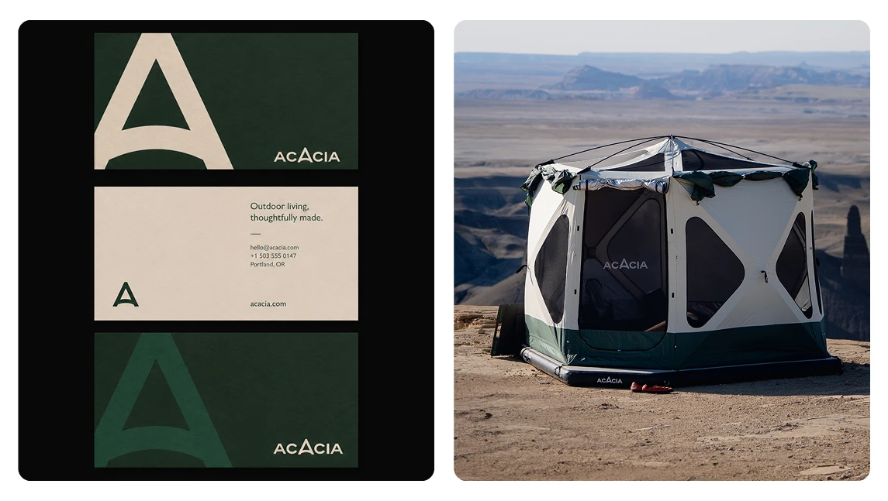
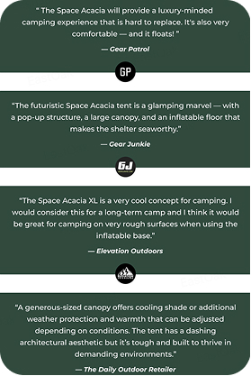
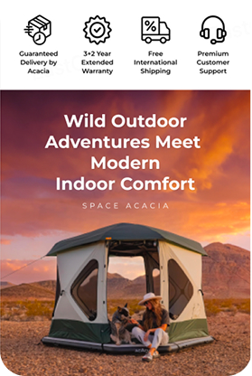
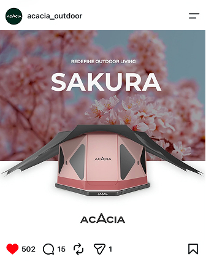
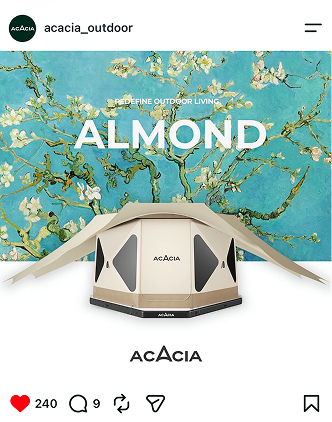

01 · BRAND FOUNDATION
先让产品变得容易识别
建立 Logo、色彩、字体、包装和影像方向，为复杂产品提供统一表达。
BRAND · MARKET VALIDATION · DTC
从一个复杂的 3-in-1 户外产品出发，先建立品牌语言与视觉系统，再通过众筹验证市场，最后搭建能够长期解释产品和承接销售的独立站。

PROJECT SNAPSHOT
[BRAND → DTC]
0 TO 1 COMMERCE SYSTEM
THE CAUSAL CHAIN
01 · BRAND FOUNDATION
建立 Logo、色彩、字体、包装和影像方向，为复杂产品提供统一表达。
02 · CAMPAIGN VALIDATION
把功能、场景和回报方案组织成众筹叙事，验证市场是否理解并愿意支持。
03 · DTC COMMERCE
把一次性的活动内容整理为可浏览、可解释、可购买和可扩展的网站。
01 · BRAND FOUNDATION




RECOGNITION
让产品在众筹、社媒和网站中保持同一品牌印象。
EXPLANATION
把 3-in-1 产品结构翻译为用户容易记住的语言。
TRUST
通过一致的视觉与内容减少新品类的不确定感。
02 · CROWDFUNDING LAUNCH
品牌基础先建立认知；众筹页面再围绕功能、场景、参数与回报方案完成市场验证。




03 · DTC WEBSITE
Homepage 建立品牌认知与探索路径；PDP 解释复杂产品，并支持用户完成购买决策。
从首页了解品牌与 3-in-1 产品体系。
解释产品解决的问题与组件关系。
进入 Tent、Floor、Canopy 等入口。
在 PDP 完成规格、组合与购买。
用场景、测评、保障与内容建立信任。
AUTO SCROLL
进入视口后自动浏览；鼠标、滚轮或触摸操作时暂停。

FINAL RESULT
品牌建立了统一表达；众筹证明市场愿意购买；独立站把一次发布沉淀为长期内容与销售资产。